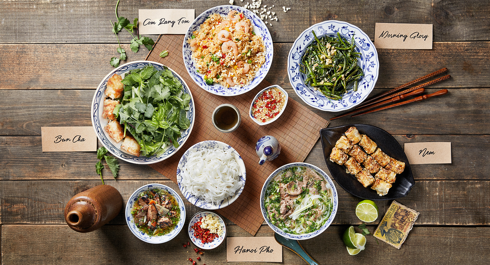

WORK DETAIL
분짜라붐
2022.12.26~2022.12.29 (3일)
퍼블리싱 100%
- html
- css
- java script
- php
사용자가 스크롤을 내리면서 웹페이지를 흥미롭게 이용할 수 있게 다양한 모션 효과를 넣었고, 모션 효과를 사용하여 페이지의 컨셉을 전달하고 감각을 표현하는 데에 더욱 효과적이게 하였습니다.
고정 메뉴를 사용하여, 메뉴가 상단에 항상 표시되도록 하였고, 링크를 클릭하면 해당 영역으로 부드럽게 스크롤이 되도록 하였습니다.


스크롤이 길어질 경우, 클릭하면 화면이 맨 위로 부드럽게 이동할 수 있도록 도와주는 버튼을 만들었으며,
사용자가 웹페이지를 이용하면서 시각적으로 방해되지 않게 하단에 고정시켰습니다.